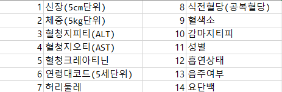

Method

1. 전처리
먼저 1000000개의 NHIS 2022 데이터셋을 가지고 온 뒤, 혈압 데이터가 없는 경우, 공백 데이터가 2개 이상 존재하는 경우, 그리고 19세 이하인 경우를 전부 제외하여 14개의 변수에 대한 994337개의 유효성 데이터를 확보하였다. 다음으로 수축기 혈압이 140 이상이면서 이완기 혈압이 90 이상의 고혈압 환자에 대하여 1로 라벨링 하고, 그렇지 않은 경우인 정상에 대해서는 0으로 라벨을 표시하였다.
그 다음, 994337개의 유효 데이터에서 고혈압 환자는 55529명이고, 정상은 938808명으로, 고혈압 환자의 비율은 5.584%에 불과하며, 이는 정상과 비정상 데이터간의 불균형이 약 16배에 달하므로, 이 불균형을 해소하기 위하여 Random Over Sampling 기법을 이용하여 데이터 증강을 실시하였다.[1]
2. 분류 모델
최종 가공된 데이터를 효과적으로 분류하기 위한 방법으로 RandomForest(RF), XGBoost, LogisticRegression(LR)분류 모델을 사용하였으며, 각 모델에 대해 5-fold cross vaildation을 실시한 후 hard-voting을 사용하여 정확도와 f1-score, 그리고 confusion matrix을 도출하였다.
3. 데이터 중요도 찾기
먼저 각 모델의 feature importance를 추출한 다음, 분류 모델 중 가장 정확도 지표가 높았던 모델을 기반으로 하여 데이터를 하나씩 추가하면서 정확도를 조사함으로서 가장 정확도가 높은 경우에 해당 변수를 추가하는 식으로 나열하여 고혈압을 예측하는 것에 중요한 지표를 탐색하였으며, 해당 결과를 모델의 feature importance와 비교하였다.